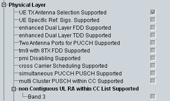

This section indicates physical layer capabilities of the UE.

Support of transmit antenna selection, see 3GPP TS 36.213.
Remote command:Support of PDSCH TM 7 for FDD.
Remote command:Support of enhanced dual layer (PDSCH TM 8) for FDD/TDD.
Remote command:Support of transmit diversity for PUCCH formats 1/1a/1b/2/2a/2b and support of PUCCH format 3 / transmit diversity for PUCCH format 3.
Remote command:Support of PDSCH TM 9 with 8 CSI-RS ports for FDD.
Remote command:Support of PMI disabling.
Remote command:Support of cross-carrier scheduling for CA.
Remote command:UE baseband supports simultaneous transmission of PUCCH and PUSCH and is band agnostic.
Remote command:UE baseband supports multi-cluster PUSCH transmission within a component carrier (CC), and is band agnostic.
Remote command:For each supported E-UTRA band: UE RF supports non-contiguous UL resource allocations within a CC.
Remote command: